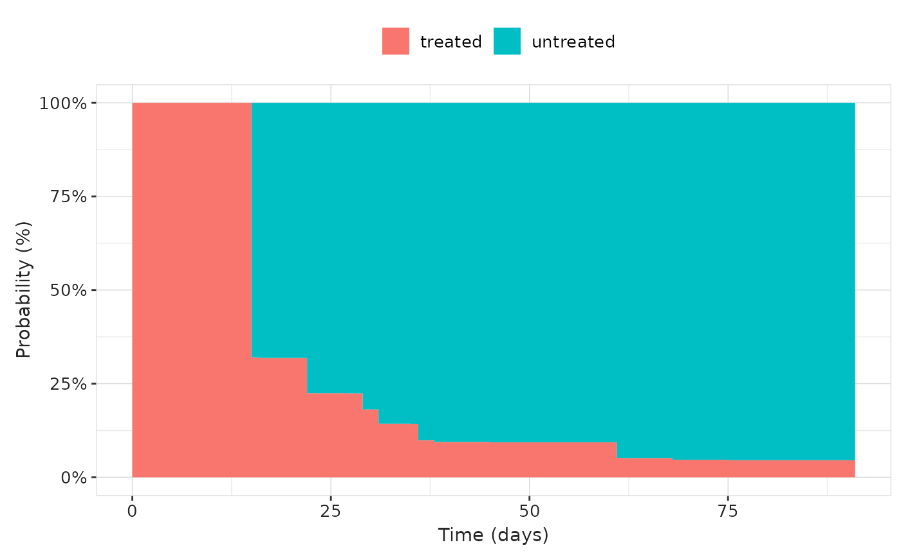
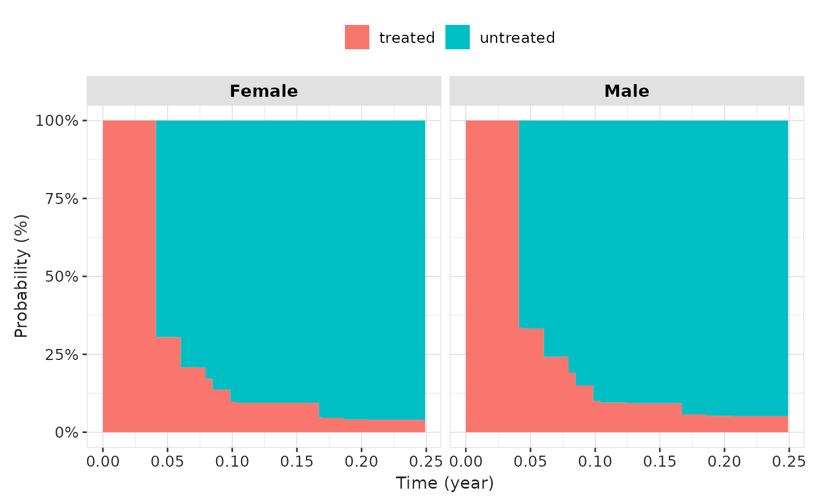

Plot Multi-State Occupation Probabilities
Source:R/summariseMultiStateProbabilities.R
plotMultistateProbabilities.RdDisplay the probabilities from summariseMultistateProbabilities() as
stacked step areas, with state occupation shown as percentages.
Arguments
- result
A
summarised_resultobject produced bysummariseMultistateProbabilities().- style
Plot style passed to
visOmopResults::themeVisOmop(). It can be the name of a built-in style, a path to a YAML style file, orNULLto use the default style.- timeScale
Character string specifying the time scale of the x-axis: either
"days"or"years". Years are calculated as days divided by365.25; this changes only the plot axis.
Details
States are stacked in transition-matrix order. Varying result columns,
including initial states, strata, and analysis settings, create separate
panels. Use filterGroup() and filterStrata() before plotting to select
the initial states and populations to display. Keep all destination states
when displaying the complete probability distribution.
Plotting requires the suggested packages visOmopResults, ggplot2, and
scales.
Examples
library(CohortConstructor)
library(dplyr)
#>
#> Attaching package: ‘dplyr’
#> The following objects are masked from ‘package:stats’:
#>
#> filter, lag
#> The following objects are masked from ‘package:base’:
#>
#> intersect, setdiff, setequal, union
library(omock)
library(OmopMultistate)
cdm <- mockCdmFromDataset(datasetName = "GiBleed")
#> ℹ Loading bundled GiBleed tables from package data.
#> ℹ Adding drug_strength table.
#> ℹ Creating local <cdm_reference> object.
# An illustrative concept set: aspirin 81 mg oral tablets.
# Keep the first treatment episode for each person.
cdm$treated <- conceptCohort(
cdm = cdm,
conceptSet = list(treated = 19059056L),
name = "treated"
) |>
requireIsFirstEntry()
#> ℹ Subsetting table drug_exposure using 1 concept with domain: drug.
#> ℹ Combining tables.
#> ℹ Creating cohort attributes.
#> ℹ Applying cohort requirements.
#> ℹ Merging overlapping records.
#> ✔ Cohort treated created.
# Enter the untreated state the day after treatment ends. Require that day
# to be within observation, so loss to follow-up is not a discontinuation.
cdm$untreated <- cdm$treated |>
padCohortEnd(days = 1L, requireFullContribution = TRUE, name = "untreated") |>
padCohortDate(
days = 0L, indexDate = "cohort_end_date", cohortDate = "cohort_start_date"
) |>
renameCohort("untreated")
cdm <- bind(cdm$treated, cdm$untreated, name = "states")
# Model first discontinuation: untreated is an absorbing state.
# Matrix state names must match the cohort names.
trans <- transMat(
x = list(2, integer()),
names = c("treated", "untreated")
)
cdm$states <- PatientProfiles::addSex(cdm$states)
result <- summariseMultistateProbabilities(
cohort = cdm$states,
trans = trans,
strata = list("sex"),
followUpDays = 365,
stateHierarchy = c("treated", "untreated")
)
#> `cohort_table_name` eliminated from settings as all elements are NA.
# Show the overall probabilities for people starting treatment.
result |>
filterGroup(initial_state == "treated") |>
filterStrata(sex == "overall") |>
plotMultistateProbabilities()

# Compare the sex strata in separate panels, with time displayed in years.
result |>
filterGroup(initial_state == "treated") |>
filterStrata(sex != "overall") |>
plotMultistateProbabilities(timeScale = "years")

cdmDisconnect(cdm)